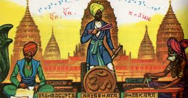

Antigua India.
Los registros más antiguos existentes de la India son los Sulba Sutras (datados de aproximadamente entre el siglo VIII a. C. y II d. C),20 apéndices de textos religiosos con reglas simples para construir altares de formas diversas, como cuadrados, rectángulos, paralelogramos y otros.21 Al igual que con Egipto, las preocupaciones por las funciones del templo señala un origen de las matemáticas en rituales religiosos.20 En los Sulba Sutras se encuentran métodos para construir círculos con aproximadamente la misma área que un cuadrado, lo que implica muchas aproximaciones diferentes del número π.2223 Adicionalmente, obtuvieron el valor de la raíz cuadrada de 2 con varias cifras de aproximación, listas de ternas pitagóricas y el enunciado del teorema de Pitágoras.24 Todos estos resultados están presentes en la matemática babilónica, lo cual indica una fuerte influencia de Mesopotamia.20 No resulta claro, sin embargo, hasta qué punto los Sulba Sutras influenciaron las matemáticas indias posteriores. Al igual que en China, hay una falta de continuidad en la matemática india; significativos avances se alternan con largos períodos de inactividad.20
Panini (hacia el siglo V a. C.) formuló las reglas de la gramática del sánscrito.25 Su notación fue similar a la notación matemática moderna y usaba "metarreglas", transformaciones lineales y recursiones.[cita requerida] Pingala (aproximadamente de los siglos III al I a. C.) en su tratado de prosodia, usa un dispositivo correspondiente a un sistema binario de numeración.[cita requerida] Su discusión sobre la combinatoria de métricas musicales corresponde a una versión elemental del teorema del binomio.[cita requerida] La obra de Pingala también contiene ideas básicas sobre los números de Fibonacci, llamados mātrāmeru.
Obra publicada con Licencia Creative Commons Reconocimiento Compartir igual 4.0